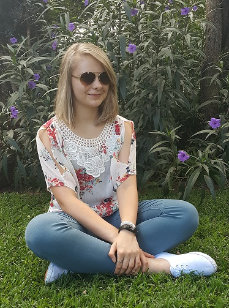

About Me
My name is Anuscke and I'm a Programmer and Entrepreneur in training. I am currently working through various projects and courses on Khan Academy, CodeCademy and Stone River Elearning, I'm also busy with my GED.
Who am I
Firstly, I'm a Christian and proud to be one, also I'm an introvert as some poeple might even say, I'm an "extroverted intovert", but I won't let that define me.
I am who God made me to be, God made me who I am for a reason, He gave me specific gifts, talents and a specific personality for a reason, He also gave you specific gifts, talents with a specific personality, we just need to learn to embrace it and be proud of who we are. God made each one of us uniqe, He set us apart from others, He made us to stand out from the rest.
"Teach me to do Your will, for you are my God, may Your spirit lead me on level ground" - Psalm 143:10
My hobbies
When I'm not learning about HTML, CSS and other programming languages or busy with my other studies, I like to play guitar, by which I am actually teaching myself. I'm also teaching myself to speak Italian, it's really fun and exciting learning a new lanuage. And finaly I'm trying learn some SASL(South African Sign Language), that is quite challengeing to learn, if I do say so myself, but I love it... Plus I'm building some fictional websites just for fun, to test or improve my coding skills and knowledge. And my most favorite of all is reading books writen by Karen Kingbury, New York's number one author, I would definitly recommend reading her books, her books have really changed my life forever. For me personally I love learning new things every day, growing my knowlege on my favorite topics. Life is to short just sit around and do nothing.
- Difficult roads often lead to beautiful destinations.
- If it was easy anyone can do it, and you're not just anyone.
- After failing to climb Everest a great man said, "I will come again and conquer you, because as a mountain you cannot grow, but as a human, I can grow...."
- Let your smile change the world, but don't let the world, change your smile.
- Be our own kind of beautiful.
- Only those I really love and who love me, will ever know the real me.
- It always seems impossible until it's done.
- I have this theory that if one person goes out of their way to show compashion can start a chain reaction.